Tràn Dịch Màng Tim
I. Đại cương
– Tràn dịch màng ngoài tim (Pericardial effusion) là sự tích tụ bệnh lý dịch trong khoang màng ngoài tim; dịch có thể là thanh dịch, máu, mủ hoặc dưỡng chấp, phân bố khu trú hoặc lan tỏa. Khoang này bình thường chứa khoảng 10–50 mL dịch; không dùng một ngưỡng thể tích đơn độc để xác định mức độ ảnh hưởng huyết động.
– Dịch tễ: Tần suất và cơ cấu căn nguyên thay đổi theo vùng địa lý và bệnh nền; lao là căn nguyên quan trọng ở vùng lưu hành cao, trong khi nhiều trường hợp tại các nước phát triển không tìm được căn nguyên xác định.
– Căn nguyên:
+ Nhóm viêm, nhiễm trùng và tổn thương sau can thiệp gồm nhiễm virus hoặc vi khuẩn, bệnh tự miễn, sau nhồi máu cơ tim, phẫu thuật tim hoặc xạ trị.
+ Bệnh ác tính, đặc biệt di căn màng ngoài tim và bệnh lý huyết học, có thể gây tràn dịch.
+ Suy tim, xơ gan và giảm albumin máu có thể gây tích tụ dịch do thay đổi áp lực thủy tĩnh hoặc áp lực keo.
+ Suy thận/urê huyết, suy giáp và một số thuốc, như hydralazine hoặc procainamide, cũng có thể là căn nguyên.
+ Chấn thương, biến chứng thủ thuật tim hoặc bóc tách động mạch chủ lên có thể gây tràn máu màng ngoài tim.
+ Tổn thương hoặc tắc nghẽn dẫn lưu bạch huyết có thể gây tràn dưỡng chấp màng ngoài tim; bệnh ác tính và phẫu thuật là những căn nguyên liên quan.
– Biểu hiện lâm sàng: Có thể không triệu chứng hoặc gây đau/nghẹn ngực, khó thở; khi ảnh hưởng huyết động đáng kể, người bệnh có thể biểu hiện ép tim.
– Phân bố: Dịch có thể lan tỏa quanh tim hoặc khu trú; ổ dịch khu trú, nhất là sau phẫu thuật hoặc viêm dính, có thể gây chèn ép khu trú.
– Vai trò CĐHA: CĐHA xác định sự hiện diện, phân bố và mức độ tràn dịch, đánh giá ảnh hưởng huyết động, đồng thời gợi ý căn nguyên và biến chứng. Siêu âm tim là phương tiện đầu tay; X-quang có dấu hiệu gián tiếp chủ yếu khi dịch nhiều, còn CLVT bổ sung đánh giá phân bố, thành phần dịch và màng ngoài tim.
© Chẩn Đoán Hình Ảnh Xray.vn
II. Chẩn đoán x-quang
– Trên phim nghiêng, dấu hiệu tách dải mỡ (fat-pad sign) là dải mờ mô mềm ngăn cách mỡ sau xương ức với mỡ thượng tâm mạc; khoảng tách > 2 mm gợi ý tràn dịch màng ngoài tim. Dấu hiệu này ít nhạy; tràn dịch lượng ít thường không thấy trên X-quang.
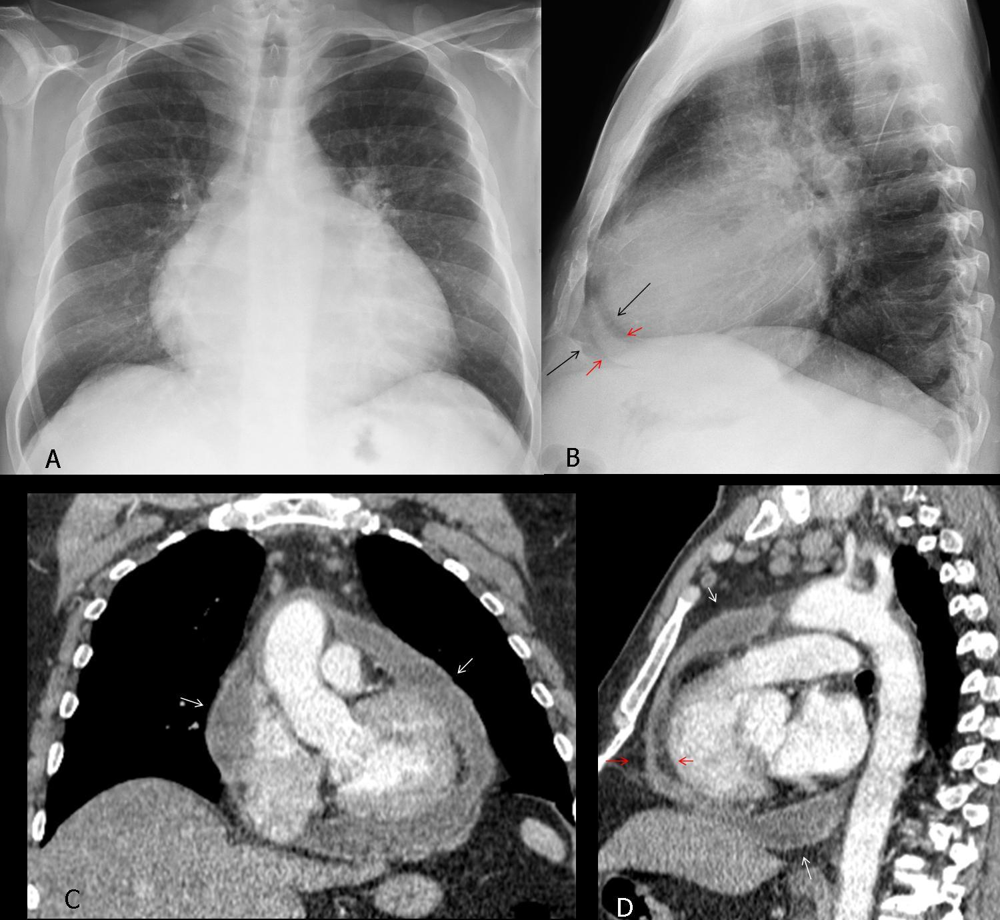
=> Dấu hiệu bánh Oreo (Oreo cookie sign), đồng nghĩa với dấu hiệu đệm mỡ trước tim, là dải mờ dịch màng ngoài tim nằm giữa dải mỡ thượng tâm mạc và dải mỡ màng ngoài tim trên phim nghiêng; CLVT giúp xác nhận vị trí dải dịch.
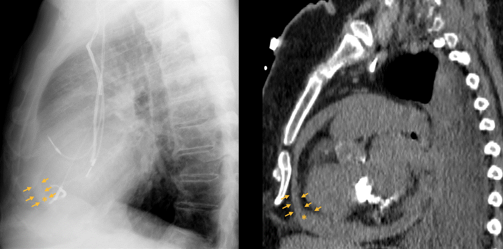
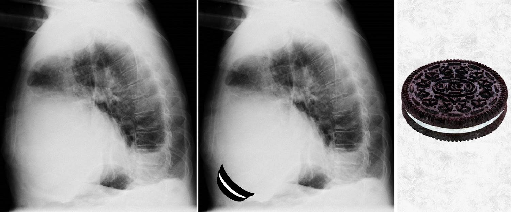
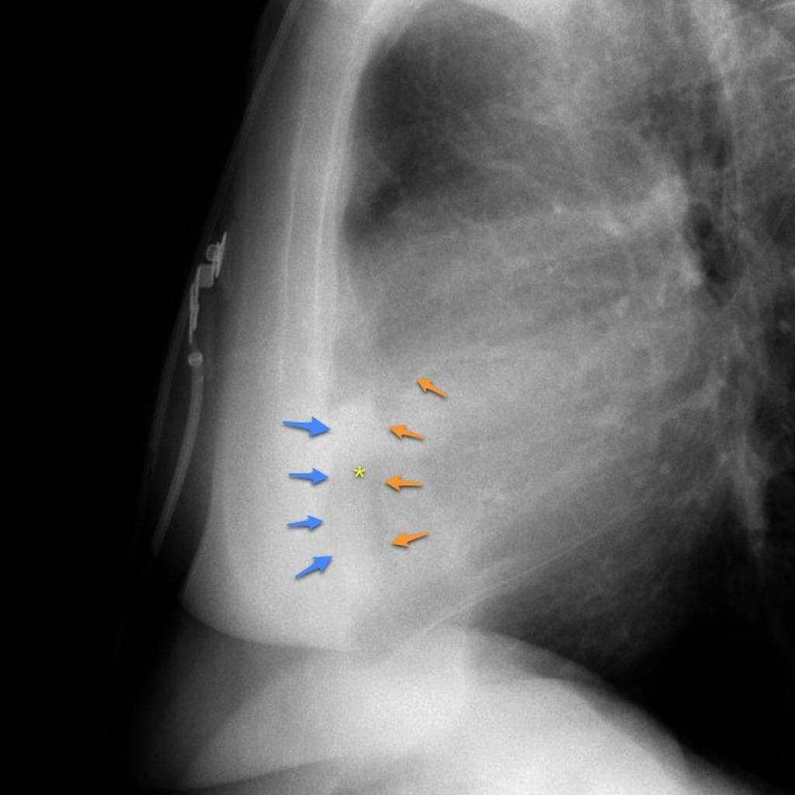
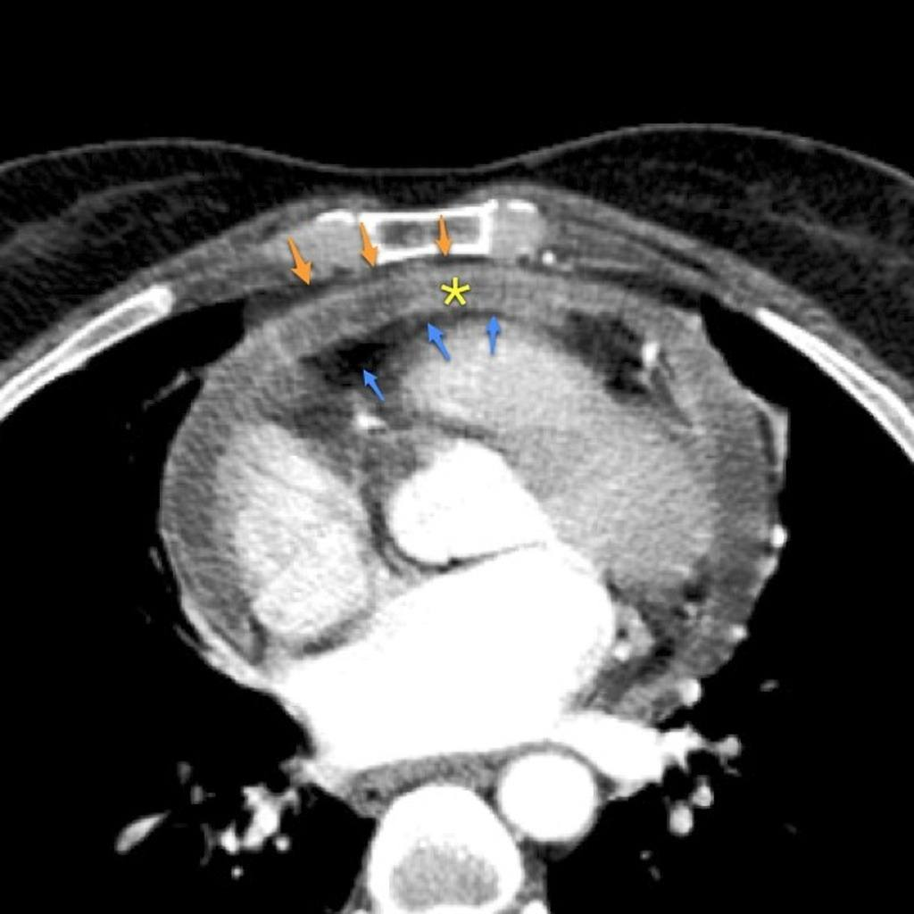
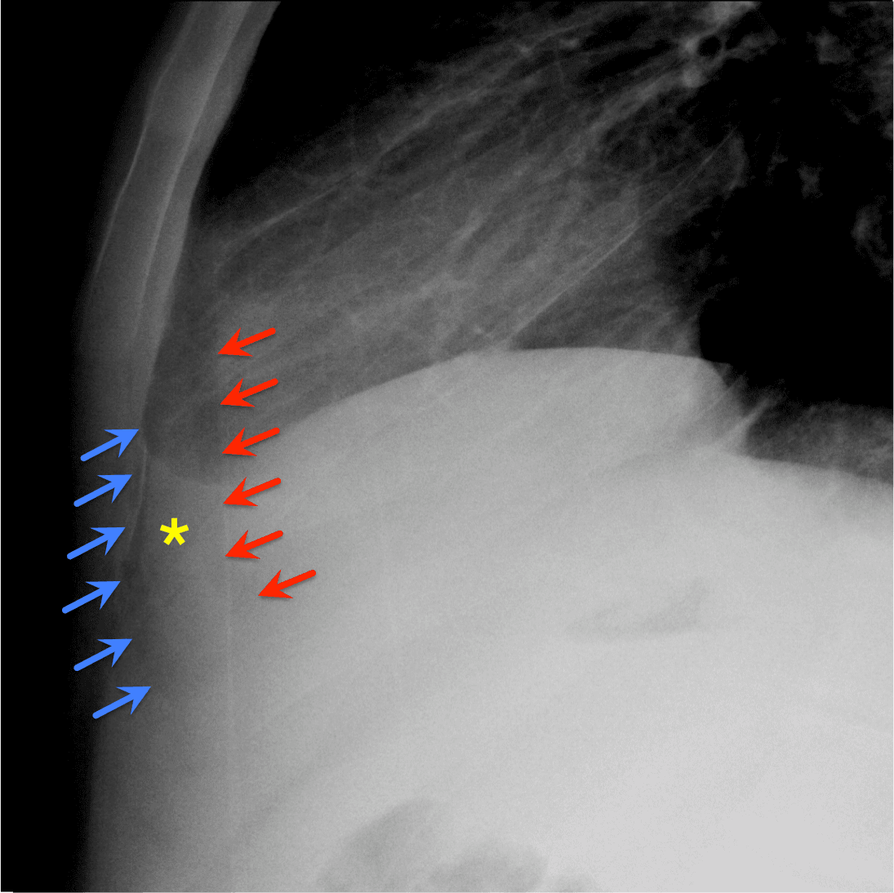
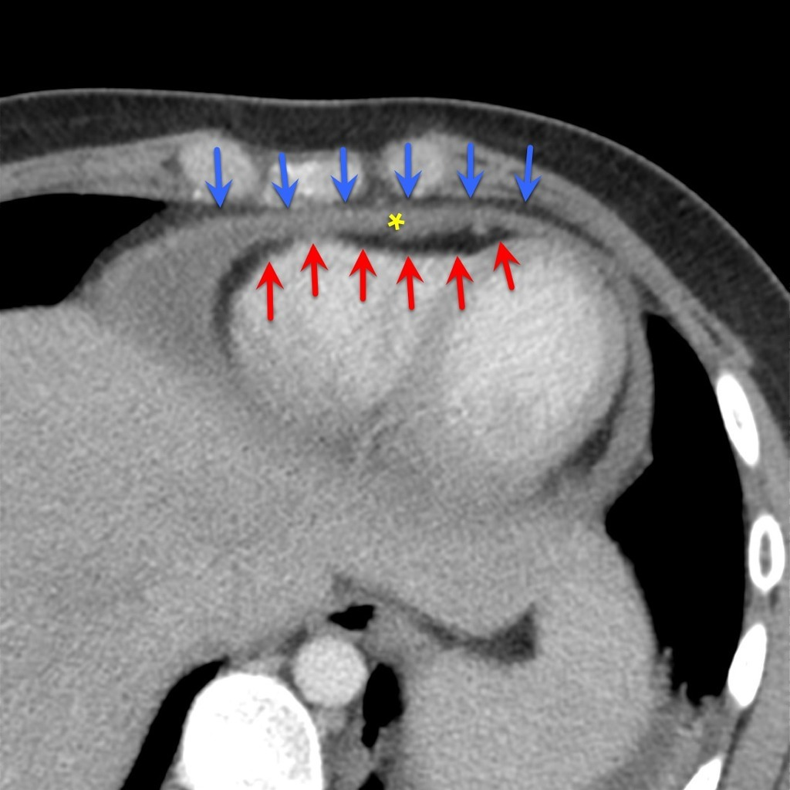
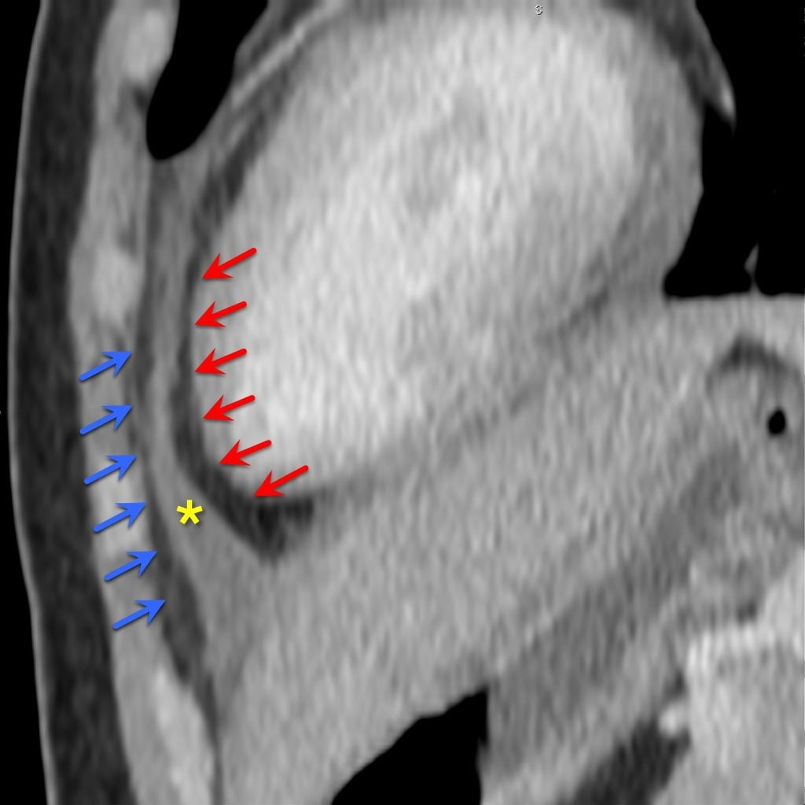
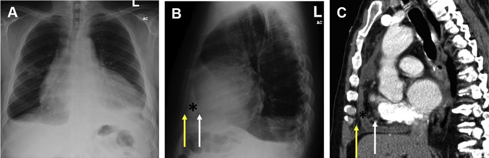
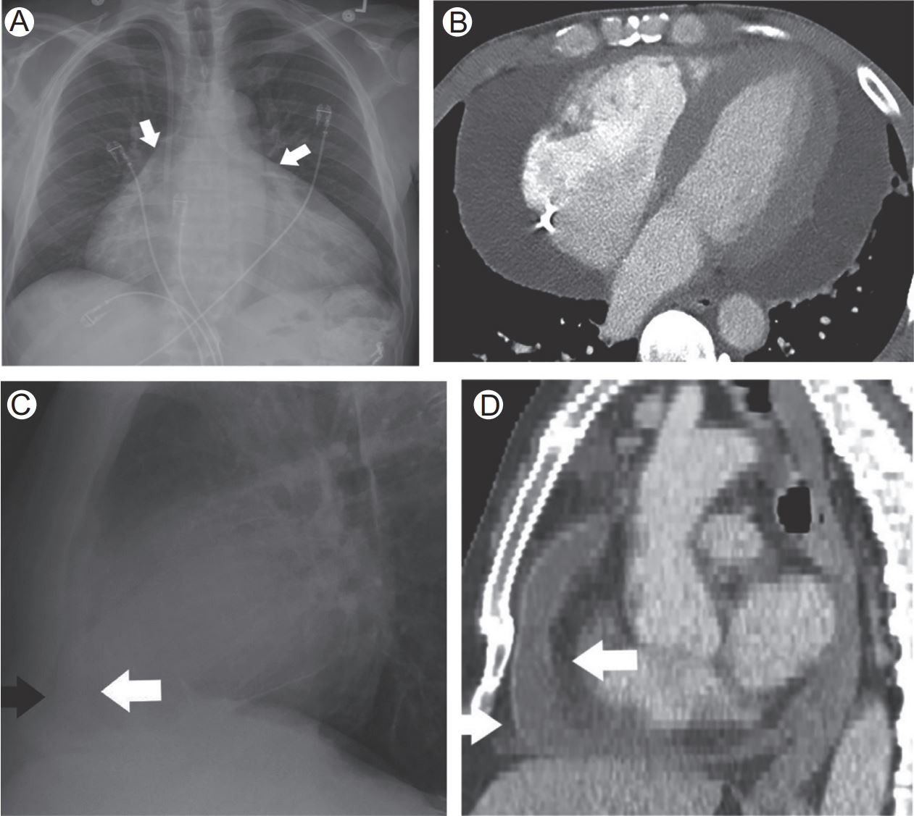
– Khi dịch tích tụ chậm và lượng lớn, bóng tim to đối xứng, bờ tim tròn tạo dấu hiệu chai nước (water bottle sign); góc tâm hoành thường vẫn nhọn. Dấu hiệu chai nước không đặc hiệu, không phân biệt chắc chắn tràn dịch với tim to do giãn buồng tim; X-quang không định lượng chính xác dịch, cần siêu âm tim để xác nhận và đánh giá ảnh hưởng huyết động.
– Đánh giá chỉ số tim ngực (cardiothoracic ratio): Là tỷ số giữa đường kính ngang lớn nhất của bóng tim và đường kính trong lớn nhất của lồng ngực, đo trên phim ngực thẳng tư thế sau-trước (PA) khi hít vào đủ:
+ Người lớn và trẻ em: < 0,5.
+ Trẻ sơ sinh: ≤ 0,6.
+ Chỉ số tăng chỉ cho biết bóng tim to, không phân biệt được tràn dịch màng ngoài tim với giãn buồng tim; chỉ số bình thường không loại trừ tràn dịch lượng ít.

=> Case lâm sàng 1:
=> Case lâm sàng 2:


– Cạm bẫy:
+ Ở trẻ nhỏ, bóng tuyến ức chồng lấp có thể làm bóng tim có vẻ lớn và khiến chỉ số tim ngực bị ước lượng cao.

+ Biến dạng lồng ngực hoặc bệnh phổi mạn tăng căng làm chỉ số kém tin cậy; chỉ số này phản ánh kích thước ngang, không đánh giá đầy đủ kích thước trước-sau và chiều dọc của tim.
+ Phim chụp trước-sau (AP), nhất là phim tại giường, làm bóng tim phóng đại; mức độ tùy kỹ thuật chụp, không có mức tăng cố định 10%.
+ Khi thất trái giãn, mỏm tim thường lệch xuống và sang trái; cần đo đến bờ trái ngoài cùng của bóng tim để xác định đường kính ngang lớn nhất.

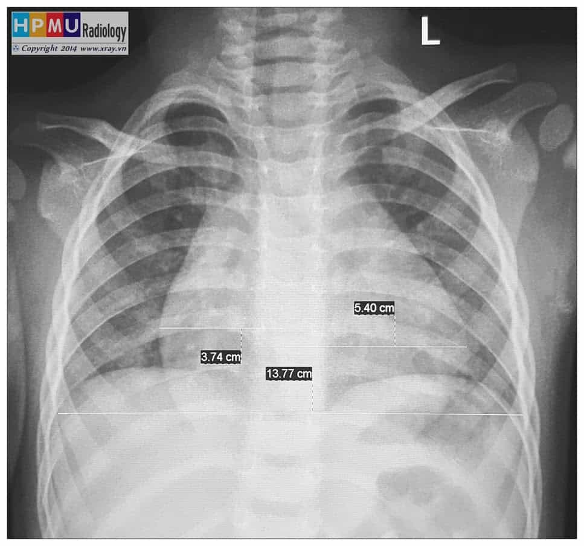
– Ở tràn dịch lượng lớn, bóng tim có thể giãn theo chiều dọc, phần thấp bè rộng hơn, tạo hình bầu nậm; đây là biến thể hình thái của dấu hiệu chai nước.
– Các bờ buồng tim bình thường có thể kém rõ, trong khi bờ ngoài bóng tim–màng ngoài tim thường trơn và tròn; đây không phải dấu hiệu đặc hiệu.


III. Chẩn đoán siêu âm
– Vai trò CĐHA:
+ Siêu âm tim qua thành ngực là phương tiện đầu tay để phát hiện, định vị và ước lượng mức độ tràn dịch, đồng thời đánh giá ảnh hưởng huyết động.
+ Siêu âm đánh giá chức năng tim, hỗ trợ đánh giá sinh lý co thắt và hướng dẫn chọc dò hoặc dẫn lưu.
– Đặc điểm hình ảnh:
+ Dịch tự do thường tạo khoảng trống âm giữa lá tạng và lá thành màng ngoài tim; ở người nằm ngửa, dịch thường xuất hiện phía sau trước, sau đó có thể lan quanh tim khi lượng tăng.
+ Dịch có fibrin, máu hoặc mủ có thể chứa hồi âm, cặn hoặc vách; không phải mọi trường hợp đều có hình ảnh trống âm đồng nhất.
+ Dịch khu trú có thể gây chèn ép khu trú; cần khảo sát nhiều mặt cắt để xác định đầy đủ vị trí và phạm vi.
– Đánh giá mức độ dịch:
+ Đo khoảng cách lớn nhất giữa hai lá màng ngoài tim vào cuối tâm trương, khảo sát nhiều mặt cắt.
+ Tràn dịch nhẹ: < 10 mm; vừa: 10–20 mm; lớn: > 20 mm.
+ Các ngưỡng này phân độ theo chiều sâu khoảng dịch trên siêu âm, không quy đổi chính xác thành thể tích.
– Đánh giá ép tim:
+ Xẹp nhĩ phải trong tâm thu hoặc xẹp thất phải trong tâm trương gợi ý ảnh hưởng huyết động.
+ Tĩnh mạch chủ dưới giãn, giảm xẹp theo hô hấp và biến thiên dòng đổ đầy qua van hai lá/ba lá theo hô hấp hỗ trợ đánh giá ép tim.
+ Diễn giải các dấu hiệu siêu âm cùng tình trạng lâm sàng; thể tích dịch đơn thuần không xác định có ép tim hay không.


=> Case lâm sàng:
IV. Chẩn đoán CLVT
– Đặc điểm hình ảnh:
+ Dịch màng ngoài tim tạo lớp quanh tim, đồng nhất hoặc không đồng nhất. Ảnh không tiêm thuốc cản quang dùng để đánh giá tỷ trọng tự nhiên; ảnh sau tiêm giúp đánh giá màng ngoài tim và các tổn thương kèm theo.
+ Dịch đơn giản thường đồng nhất, tỷ trọng thấp, thường < 25 HU; giá trị này không đủ để khẳng định dịch thấm hay dịch thanh.
+ Tỷ trọng tự nhiên tăng, thường > 25 HU, có thể gặp trong tràn máu, dịch giàu protein, dịch mủ hoặc dịch ác tính; tràn máu thường có tỷ trọng > 30 HU. Các giá trị chồng lấp, không dùng một ngưỡng HU đơn độc để xác định thành phần hoặc căn nguyên.
+ Dịch liên quan suy giáp cũng có thể tăng tỷ trọng, nhưng dấu hiệu này không đặc hiệu.

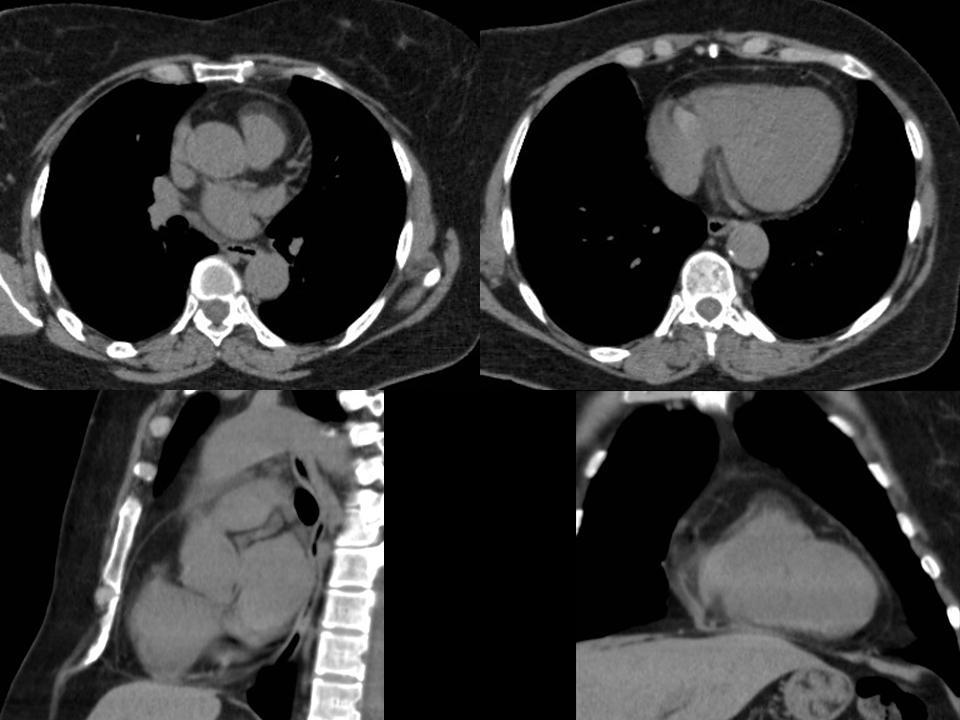

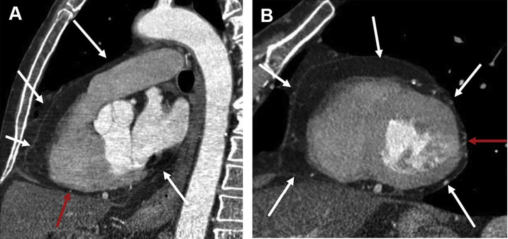

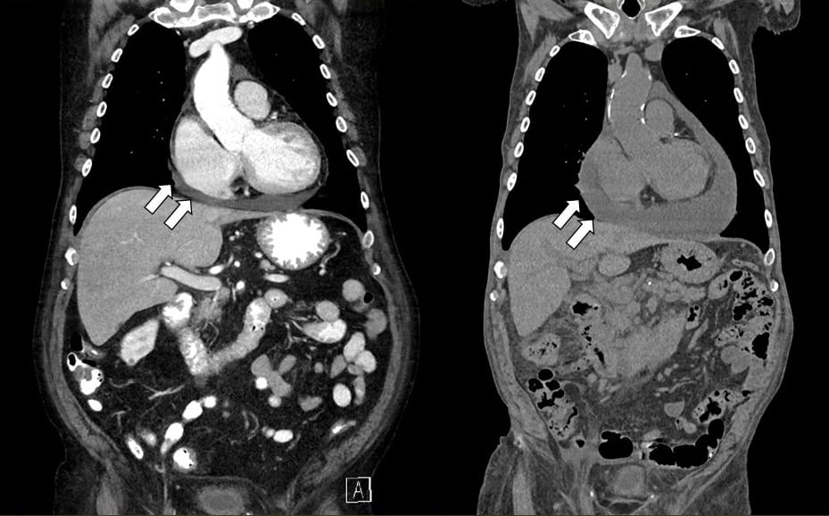

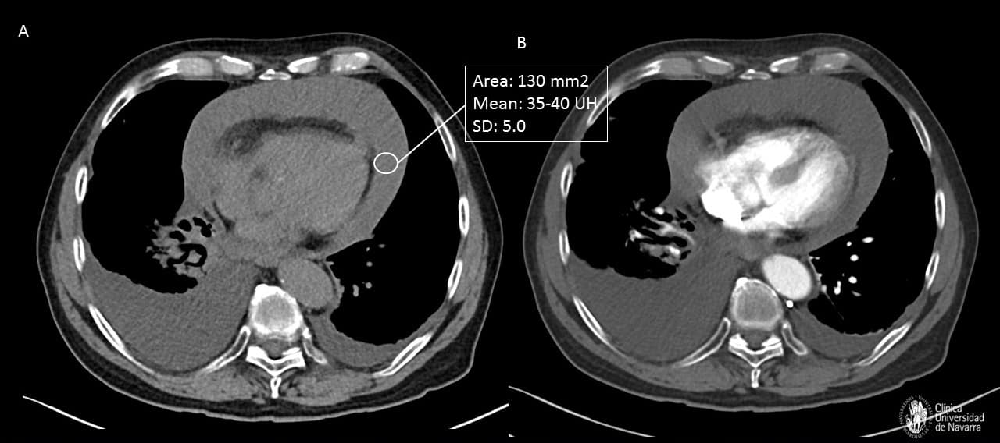

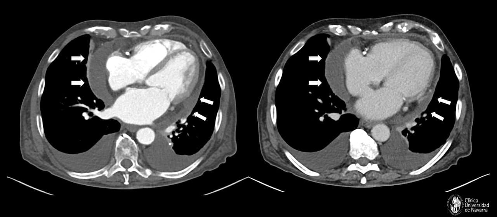

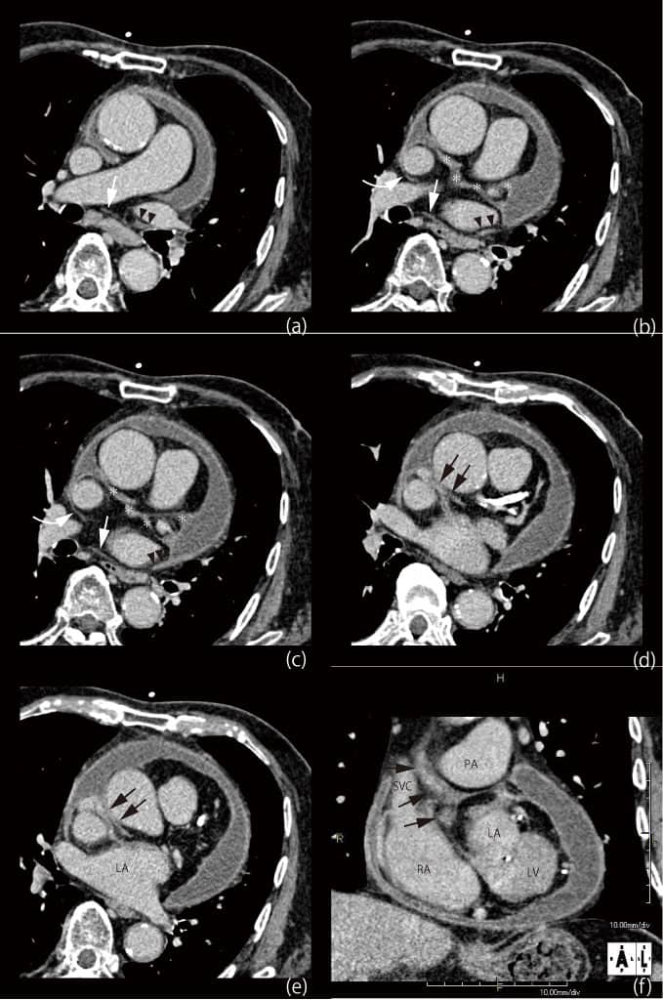

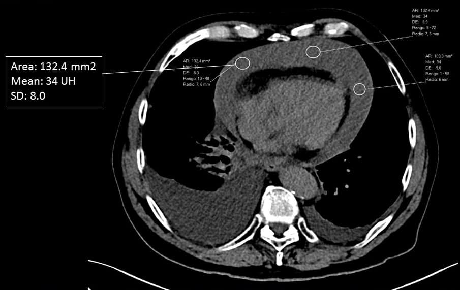

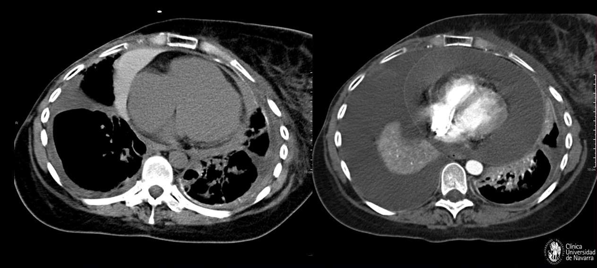

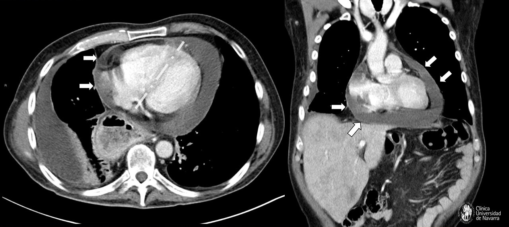

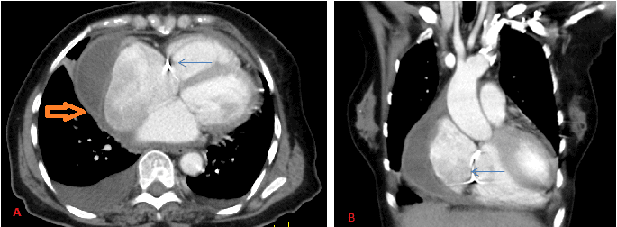

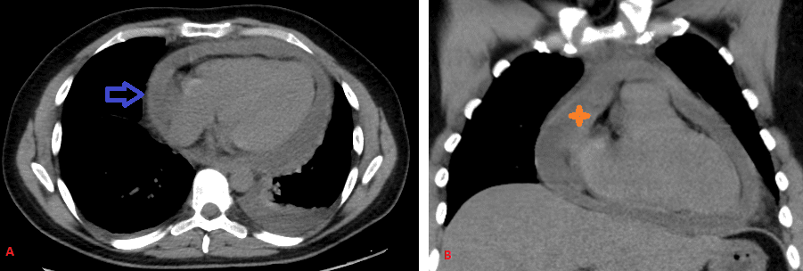

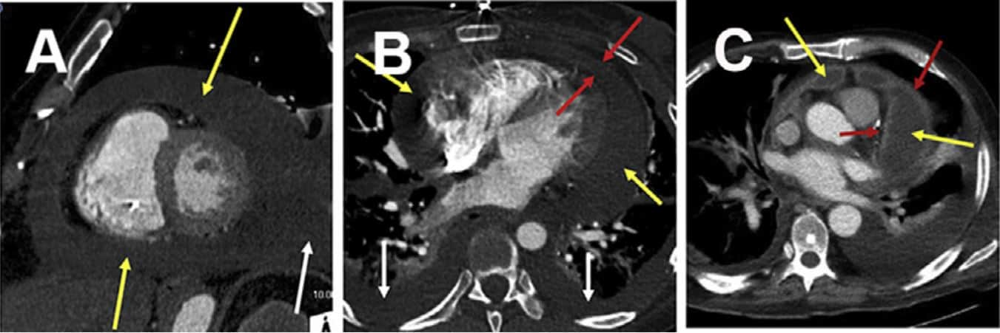

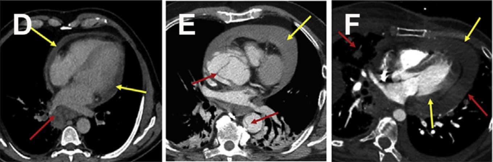

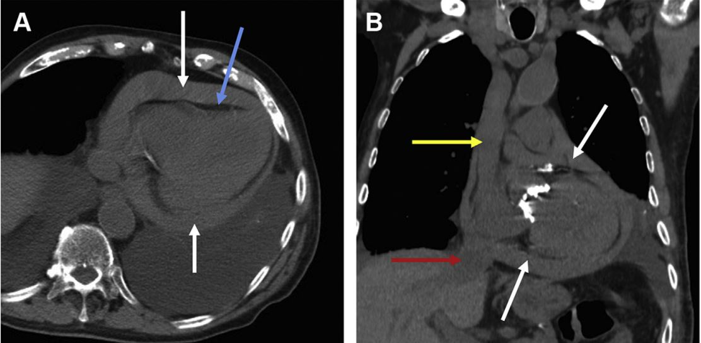
=> Case lâm sàng 1:


=> Case lâm sàng 2:


– Dịch màng ngoài tim khu trú lượng ít đôi khi khó phân biệt với dày màng ngoài tim trên CLVT; cần khảo sát nhiều mặt phẳng và phối hợp siêu âm tim hoặc MRI nếu chưa xác định rõ.


– Đánh giá màng ngoài tim:
+ Ghi nhận dày lan tỏa hay khu trú, bề mặt trơn hay không đều/dạng nốt, vôi hóa và mức độ ngấm thuốc sau tiêm.
+ Màng ngoài tim bình thường trên CLVT thường dày 1–2 mm; bề dày > 4 mm gợi ý dày bất thường. Khoảng 2–4 mm cần diễn giải cùng hình thái và các dấu hiệu khác.
+ Dày và ngấm thuốc có thể gợi ý viêm nhưng không đặc hiệu; bề dày màng ngoài tim đơn thuần không xác định viêm màng ngoài tim co thắt.


– Đánh giá mức độ tràn dịch:
+ Ghi nhận bề dày lớn nhất và phạm vi phân bố của dịch trên các mặt phẳng CLVT.
+ Có thể phân độ theo bề dày: nhẹ < 10 mm, vừa 10–20 mm, nhiều > 20 mm; không quy đổi trực tiếp các ngưỡng này thành thể tích cố định.

– Đánh giá tình trạng ép tim:
+ Các dấu hiệu gợi ý gồm đè ép hoặc xẹp nhĩ phải/thất phải, giãn tĩnh mạch chủ dưới và trào ngược thuốc cản quang vào tĩnh mạch chủ dưới hoặc tĩnh mạch gan.
+ Phù quanh khoảng cửa gan có thể đi kèm tăng áp lực tĩnh mạch hệ thống nhưng không đặc hiệu.
+ Dấu hiệu CLVT chỉ gợi ý ép tim; cần đối chiếu lâm sàng và siêu âm tim để đánh giá ảnh hưởng huyết động.


V. Phân biệt
* Khối u trung thất
– Khối u trung thất (mediastinal mass) thường tạo khối khu trú, có thể làm lồi hoặc biến dạng bờ trung thất và đẩy lệch các cấu trúc lân cận; CLVT sau tiêm giúp xác định thành phần mô đặc hoặc dạng nang, mức độ ngấm thuốc và liên quan với màng ngoài tim.
– Tràn dịch màng ngoài tim (pericardial effusion) thường tạo lớp dịch đi theo khoang màng ngoài tim, bao quanh một phần hoặc toàn bộ tim; CLVT cho thấy dịch màng tim mà không có thành phần mô đặc ngấm thuốc. Dấu hiệu đệm mỡ trước tim trên phim nghiêng, nếu thấy, cũng gợi ý tràn dịch.
– Cạm bẫy: Dịch khu trú có thể giả dạng khối trung thất; cần đối chiếu vị trí, tính liên tục với khoang màng ngoài tim và đặc tính ngấm thuốc trên CLVT.


* Bệnh cơ tim giãn
– Bệnh cơ tim giãn (dilated cardiomyopathy):
+ Thường giãn thất trái, có thể kèm giãn thất phải và hai nhĩ; siêu âm tim cho thấy giảm chức năng co bóp.
+ Khi có suy tim, thường kèm sung huyết/phù phổi và có thể có tràn dịch màng phổi.
– Tràn dịch màng ngoài tim (pericardial effusion):
+ Tràn dịch lượng lớn có thể làm bóng tim to đồng đều, tròn dạng chai nước; nếu tràn dịch đơn thuần, thường không có sung huyết phổi.
+ Siêu âm tim phân biệt dịch trong khoang màng ngoài tim với giãn buồng tim, đồng thời đánh giá chức năng thất.

=> Case lâm sàng 1:


* Viêm màng ngoài tim
– Viêm màng ngoài tim (pericarditis):
+ Trên CLVT, dày màng ngoài tim, ngấm thuốc sau tiêm và thâm nhiễm mỡ quanh tim gợi ý viêm nhưng không đặc hiệu.
+ Bóng tim thường không to nếu không kèm tràn dịch lượng lớn.
+ Vôi hóa gợi ý bệnh mạn tính hoặc viêm màng ngoài tim co thắt; không phải dấu hiệu thường gặp của viêm cấp.
– Tràn dịch màng ngoài tim (pericardial effusion):
+ Là dịch trong khoang màng ngoài tim, có thể khu trú hoặc lan tỏa; có thể xuất hiện đơn độc hoặc kèm viêm màng ngoài tim.
+ Tràn dịch đơn thuần không nhất thiết có dày, ngấm thuốc màng ngoài tim hoặc thâm nhiễm mỡ; không có các dấu hiệu này cũng không loại trừ viêm.


=> Case lâm sàng 1:


=> Case lâm sàng 2:


* Tư thế chụp
– Ngưỡng chỉ số tim ngực chuẩn áp dụng cho phim sau-trước (PA) tư thế đứng, hít vào đủ; không áp dụng trực tiếp cho phim trước-sau (AP), vì độ phóng đại của bóng tim phụ thuộc kỹ thuật chụp và vị trí người bệnh.


Tài liệu tham khảo
* Radiological Differentiation Between Pericardial Effusion and Cardiac Dilatation – Julian Arendt
* Pericardial Effusion Imaging – Vibhuti N Singh, MD, MPH, FACC, FSCAI
* Imaging of cardiac tamponade: how to identify this life-threatening condition – F. Mendoza Ferradas, D. P. Martín Antonio, I. Soriano Aguadero
* Tuberculous Pericarditis: A multimodality imaging approach – A. S. Udare
* The Pericardium: Anatomy, Normal variants, and Pathology – T. Matsuura, K. Takase, H. Ota
* CT findings in patients with pericardial effusion: differentiation of malignant and benign disease – Joo Sung Sun, Kyung Joo Park, Doo Kyoung Kang
* Pericardial Effusion – Amir Azarbal, Martin M LeWinter
* Imaging of Pericardial Disease – Seth Kligerman
* Pericardial Effusions: Causes, Diagnosis, and Management – Sneha Vakamudi, Natalie Ho, Paul C Cremer
* Diagnosis and Treatment of Pericardial Effusions – Anna H Jackson
* Imaging of Pericardial Diseases – Kristopher W Cummings
* CT and MR imaging of pericardial disease – Zhen J Wang
* Update on bedside ultrasound diagnosis of pericardial effusion – Elisa Ceriani, Chiara Cogliati
* Comprehensive review of pericardial diseases using different imaging modalities – Shaimaa A Fadl
* Tuberculous pericardial effusion: features, tamponade, and computed tomography – George Cherian
* Computed Tomography Scan Overestimates the Size of Pericardial Effusion Compared to Echocardiography – Abdelmoniem Moustafa
* The pericardium: A Cinderella of cardiothoracic pathology – N. Anca, C. Lydell, R. Almohaisen, T. Elliot
* Imaging of cardiac tamponade: how to identify this life-threatening condition – F. Mendoza Ferradas, D. P. Martín Antonio, I. Soriano Aguadero
* Advanced imaging techniques in the diagnosis of acquired pericardial disease: Cardio-CT and Cardio-MR – M. C. Gutierrez Ramirez
* Grainger & Allison’s Diagnostic Radiology – Andreas Adam